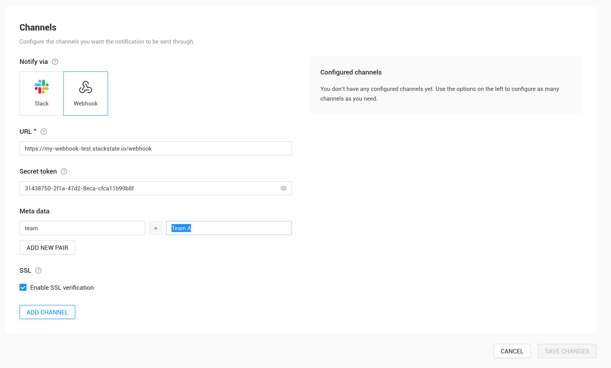

|
Ce document a été traduit à l'aide d'une technologie de traduction automatique. Bien que nous nous efforcions de fournir des traductions exactes, nous ne fournissons aucune garantie quant à l'exhaustivité, l'exactitude ou la fiabilité du contenu traduit. En cas de divergence, la version originale anglaise prévaut et fait foi. |
Webhook
Les webhooks sont des rappels HTTP personnalisés que vous définissez et exécutez. Ils peuvent effectuer toute action nécessaire chaque fois qu’une notification est ouverte ou fermée. Par exemple, en créant un ticket dans un système de billetterie qui n’est pas pris en charge nativement par SUSE Observability. Ou en écrivant simplement les messages de notification dans un bucket S3 pour référence future.
Le canal webhook envoie les données de notification sous forme de JSON sur HTTP.
Configurer un webhook

Pour configurer un webhook, complétez les champs :
-
URL - entrez l’URL du point de terminaison du webhook. L’URL doit être encodée en pourcentage si elle contient des caractères spéciaux.
-
Jeton secret - un jeton secret que SUSE Observability inclura dans chaque requête pour le valider.
-
Métadonnées - ajoutez des paires clé/valeur supplémentaires qui sont incluses dans la charge utile. Cela peut être utilisé lorsque le même point de terminaison gère plusieurs webhooks SUSE Observability et nécessite des informations supplémentaires.
-
Activer la vérification SSL - (par défaut activé) activez la validation du certificat SSL. Désactivez uniquement lorsque vous utilisez des certificats auto-signés ou des autorités de certification non prises en charge par SUSE Observability.
Enfin, sélectionnez "Ajouter un canal". Le canal webhook apparaîtra à droite. Pour tester que le webhook fonctionne, envoyez un message de test en cliquant sur le bouton "Tester".
Requêtes et charge utile du webhook.
Le canal webhook envoie des données sous forme de requêtes HTTP POST. Le point de terminaison et la charge utile sont documentés dans une spécification OpenAPI.
Exemple de charge utile pour une demande d’ouverture de notification
{
"component": {
"identifier": "urn:kubernetes:/k8s-demo-cluster:sock-shop:service/catalogue",
"link": "https://play.stackstate.com/#/components/urn%3Akubernetes%3A%2Fk8s-demo-cluster%3Asock-shop%3Aservice%2Fcatalogue?timeRange=1702624556757_1702646156757×tamp=1702635356757",
"name": "catalogue",
"tags": [
"app.kubernetes.io/component:catalogue",
"app.kubernetes.io/instance:sock-shop",
"app.kubernetes.io/managed-by:Helm",
"app.kubernetes.io/name:sock-shop",
"app.kubernetes.io/version:0.3.5",
"cluster-name:k8s-demo-cluster",
"cluster-type:kubernetes",
"component-type:kubernetes-service",
"domain:business",
"extra-identifier:catalogue",
"helm.sh/chart:sock-shop",
"name:catalogue",
"namespace:sock-shop",
"service-type:ClusterIP",
"stackpack:kubernetes"
],
"type": "service"
},
"event": {
"state": "CRITICAL",
"title": "HTTP - response time - is above 3.0 seconds",
"triggeredTimeMs": 1702635356757,
"type": "open"
},
"monitor": {
"identifier": "urn:stackpack:kubernetes-v2:shared:monitor:kubernetes-v2:http-response-time",
"link": "https://play.stackstate.com/#/monitors/urn%3Astackpack%3Akubernetes-v2%3Ashared%3Amonitor%3Akubernetes-v2%3Ahttp-response-time",
"name": "HTTP - response time - is above 3 seconds",
"tags": []
},
"notificationConfiguration": {
"identifier": "urn:system:default:notification-configuration:testing-2",
"link": "https://play.stackstate.com/#/notifications/urn%3Asystem%3Adefault%3Anotification-configuration%3Atesting-2",
"name": "Test Notification"
},
"notificationId": "836f628c-1258-4500-b1c7-23884e00f439",
"metadata": {
"team": "Team A"
}
}
Les sections dans la charge utile open sont :
-
Composant : le composant SUSE Observability auquel la notification s’applique. Cela inclut le nom du composant, l’identifiant, le type et les tags. Il contient également un lien vers l’interface utilisateur de SUSE Observability qui ouvrira le composant au moment du changement d’état de santé.
-
Événement : l’événement qui a déclenché cette notification. Il peut être de type
openouclose(voir la section suivante). Un étatopensignifie que le moniteur est toujours dans un état critique (ou déviant) pour le composant spécifié. Un étatclosesignifie que le moniteur était ouvert auparavant mais que le problème a été résolu. L’état et l’heure de déclenchement sont inclus. Est également inclus untitlequi est une brève description du problème fournie par le moniteur, c’est le même titre affiché sur la page des points saillants du composant, cela peut être différent et plus détaillé que le nom du moniteur. -
Moniteur : le moniteur qui a déclenché la notification. À côté du nom du moniteur, des tags et un identifiant, un lien est également inclus. Le lien ouvrira le moniteur dans l’interface utilisateur de SUSE Observability.
-
Configuration de la notification : La configuration de la notification pour cette notification. Comprend un nom, un identifiant et un lien. Le lien ouvrira la configuration de la notification dans l’interface utilisateur de SUSE Observability.
-
Identifiant de notification : Un identifiant unique pour cette notification. Voir aussi le cycle de vie de la notification
-
Métadonnées : Il est possible de spécifier des métadonnées sur un canal webhook. Les métadonnées sont reproduites ici de manière un à un sous forme d’un ensemble de paires clé/valeur.
Exemple de charge utile pour une demande de fermeture de notification
{
"component": {
"identifier": "urn:kubernetes:/gke-demo-dev.gcp.stackstate.io:sock-shop:service/catalogue",
"link": "https://stac-20533-webhook-channel-management-api.preprod.stackstate.io/#/components/urn%3Akubernetes%3A%2Fgke-demo-dev.gcp.stackstate.io%3Asock-shop%3Aservice%2Fcatalogue?timeRange=1702624556757_1702646156757×tamp=1702635356757",
"name": "catalogue",
"tags": [
"app.kubernetes.io/component:catalogue",
"app.kubernetes.io/instance:sock-shop",
"app.kubernetes.io/managed-by:Helm",
"app.kubernetes.io/name:sock-shop",
"app.kubernetes.io/version:0.3.5",
"cluster-name:gke-demo-dev.gcp.stackstate.io",
"cluster-type:kubernetes",
"component-type:kubernetes-service",
"domain:business",
"extra-identifier:catalogue",
"helm.sh/chart:sock-shop",
"name:catalogue",
"namespace:sock-shop",
"service-type:ClusterIP",
"stackpack:kubernetes"
],
"type": "service"
},
"event": {
"reason": "HealthStateResolved",
"type": "close"
},
"monitor": {
"identifier": "urn:stackpack:kubernetes-v2:shared:monitor:kubernetes-v2:http-response-time",
"link": "https://stac-20533-webhook-channel-management-api.preprod.stackstate.io/#/monitors/urn%3Astackpack%3Akubernetes-v2%3Ashared%3Amonitor%3Akubernetes-v2%3Ahttp-response-time",
"name": "HTTP - response time - is above 3 seconds",
"tags": []
},
"notificationConfiguration": {
"identifier": "urn:system:default:notification-configuration:testing-2",
"link": "https://stac-20533-webhook-channel-management-api.preprod.stackstate.io/#/notifications/urn%3Asystem%3Adefault%3Anotification-configuration%3Atesting-2",
"name": "Test Notification"
},
"notificationId": "836f628c-1258-4500-b1c7-23884e00f439",
"tags": {
"team": "Team A"
}
}
Les sections dans la charge utile close sont les mêmes que dans la charge utile open, sauf pour le event. Le type est maintenant close et il n’y a qu’un champ reason indiquant pourquoi la notification a été fermée. La valeur dans ce champ est une énumération, la spécification OpenAPI documente les valeurs possibles.
Cycle de vie de la notification
Comme on peut le voir dans la charge utile, chaque notification est identifiée de manière unique par son notificationId. Il est possible, voire courant, de recevoir plus d’un message pour la même notification, mais ils seront toujours envoyés selon ce cycle de vie.
Une notification est d’abord créée lorsqu’un état du moniteur passe à un état déviant ou critique (cela dépend des paramètres de notification). Un message avec le type d’événement open est envoyé au webhook.
Une notification peut être mise à jour lorsque le state ou le title dans l’événement changent. Les changements apportés au composant et à d’autres parties du message seront inclus, mais à eux seuls, ils ne déclencheront pas une mise à jour. Une mise à jour de notification envoie également un message avec le type d’événement open au webhook. Le message aura le même notificationId qui peut être utilisé pour mettre à jour les données dans le système externe (au lieu de créer une nouvelle notification).
Enfin, une notification est fermée lorsque l’état du moniteur revient à un état non critique (ou déviant). Un message avec le type d’événement close est envoyé au webhook. C’est aussi la dernière fois que le notificationId spécifique est utilisé.
Notez qu’une notification peut être à la fois ouverte et fermée pour des raisons différentes d’un changement d’état de santé :
-
Une étiquette est ajoutée à un composant ou à un moniteur. Cela peut entraîner certains états de santé critiques du moniteur correspondant aux critères de sélection dans une configuration de notification, et les notifications correspondantes seront ouvertes.
-
Pour la même raison, la suppression d’une étiquette d’un composant ou d’un moniteur peut fermer une notification même si l’état de santé reste critique.
-
Des modifications de la configuration de notification elle-même peuvent également entraîner l’ouverture ou la fermeture de nombreuses nouvelles notifications.
Validez les demandes
Le jeton secret spécifié dans la configuration du canal est inclus dans les requêtes webhook dans l’en-tête X-StackState-Webhook-Token. Votre point de terminaison webhook peut vérifier la valeur pour s’assurer que les demandes sont légitimes.
Nouvelles tentatives
Le canal webhook réessaiera les demandes pour une notification jusqu’à ce qu’il reçoive une réponse de statut 200 OK (le corps de la réponse est ignoré). Si le webhook échoue à traiter le message (par exemple, parce qu’une base de données est inaccessible à ce moment-là), il peut simplement répondre avec un code de statut 500. SUSE Observability renverra le même message dans quelques secondes dans l’espoir que le problème ait été résolu.
Si une notification a été mise à jour ou fermée, l’ancien message sera cependant rejeté et le nouveau message mis à jour sera envoyé et à nouveau réessayé jusqu’à ce qu’il réussisse.
Exemple de webhook
Pour tester comment fonctionnent les webhooks, vous pouvez utiliser ce simple script Python qui démarre un serveur HTTP et écrit la charge utile reçue sur la sortie standard.
-
Enregistrez ce script Python sous
webhook.py:
from http.server import HTTPServer, BaseHTTPRequestHandler
import json
import sys
class WebhookHTTPRequestHandler(BaseHTTPRequestHandler):
def do_POST(self):
content_len = int(self.headers.get('content-length', 0))
notification = json.loads(self.rfile.read(content_len))
print("Notification received: ", json.dumps(notification, indent = 2))
self.send_response(200)
self.end_headers()
httpd = HTTPServer(('', int(sys.argv[1])), WebhookHTTPRequestHandler)
httpd.serve_forever()-
Exécutez le serveur webhook sur un port inutilisé (par exemple 8000) :
python3 webhook.py 8000 -
Configurez le webhook dans SUSE Observability avec l’URL de votre serveur webhook
http://webhook.example.com:8000 -
Cliquez sur
testdans le canal webhook
|
L’URL de votre webhook doit être accessible par SUSE Observability, donc une adresse d’hôte local ou une adresse IP locale ne suffira pas. |
L’exemple n’authentifie pas la demande, ce qui peut être ajouté en vérifiant la valeur de l’en-tête token.
Au lieu de l’implémenter manuellement, il est également possible d’utiliser la spécification OpenAPI pour générer une implémentation de serveur dans l’un des langages pris en charge par le projet des générateurs OpenAPI.